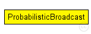
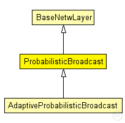

This documentation is released under the Creative Commons license
This documentation is released under the Creative Commons licenseMulti-hop ad-hoc data dissemination protocol based on probabilistic broadcast.
This protocol performs network-level broadcast using a probabilistic mechanism. This method reduces the number of packets sent on the channel (reducing the broadcast storm problem) at the risk of some nodes not receiving the data. It is particularly interesting for mobile networks. Parameter maxNbBcast sets the maximum number of broadcast transmissions of a packet, parameter beta gives the transmission probability for each attempt, parameter bcperiod sets the time between two transmission attempts. Parameter maxFirstBcastBackoff sets a backoff window before first transmission attempt, and parameter timeInQueueAfterDeath sets the time during which a node remembers a packet whose time to live (TTL) expired, avoiding retransmitting it in case it comes back in the network because of some problem.
The following diagram shows usage relationships between types. Unresolved types are missing from the diagram. Click here to see the full picture.
The following diagram shows inheritance relationships for this type. Unresolved types are missing from the diagram. Click here to see the full picture.
| Name | Type | Description |
|---|---|---|
| BaseNetwLayer | simple module |
Base module for every network layer module |
| Name | Type | Description |
|---|---|---|
| AdaptiveProbabilisticBroadcast | simple module |
Multi-hop ad-hoc data dissemination protocol based on probabilistic broadcast, with adaptive parameters. |
| Name | Type | Default value | Description |
|---|---|---|---|
| notAffectedByHostState | bool | false | |
| coreDebug | bool | false |
debug switch for core framework |
| stats | bool | false |
stats switch |
| headerLength | int |
length of the network packet header (in bits) |
|
| debug | bool | false |
debug and trace switches |
| trace | bool | false | |
| bcperiod | double | 2 s |
period between two probabilistic broadcast attempts |
| beta | double | 0.8 |
probability of broadcast for each attempt |
| maxNbBcast | double | 1 |
maximal number of broadcast attempts for each packet. |
| maxFirstBcastBackoff | double | 1 s |
maximal back-off before first broadcast attempt [seconds]. if don't want to use this parameter, simply set it to a value that is greater than bcperiod. |
| timeToLive | double | 10 s | |
| timeInQueueAfterDeath | double | 60 s |
How many seconds the message should be kept in queue after its died. That way the message is known if the node receives one of its copy that isn't dead because of TTL de-synchronization due to MAC backoff, propagation delay and clock drift. |
| Name | Value | Description |
|---|---|---|
| class | ProbabilisticBroadcast |
| Name | Direction | Size | Description |
|---|---|---|---|
| upperLayerIn | input |
from upper layer |
|
| upperLayerOut | output |
to uppe layer |
|
| upperControlIn | input |
control from upper layer |
|
| upperControlOut | output |
control to upper layer |
|
| lowerLayerIn | input |
from lower layer |
|
| lowerLayerOut | output |
to lower layer |
|
| lowerControlIn | input |
control from lower layer |
|
| lowerControlOut | output |
control to lower layer |
// Multi-hop ad-hoc data dissemination protocol based on probabilistic broadcast. // // This protocol performs network-level broadcast using a probabilistic mechanism. // This method reduces the number of packets sent on the channel (reducing the // broadcast storm problem) at the risk of some nodes not receiving the data. // It is particularly interesting for mobile networks. // Parameter maxNbBcast sets the maximum number of broadcast transmissions of a packet, // parameter beta gives the transmission probability for each attempt, // parameter bcperiod sets the time between two transmission attempts. // Parameter maxFirstBcastBackoff sets a backoff window before first transmission attempt, // and parameter timeInQueueAfterDeath sets the time during which a node remembers // a packet whose time to live (TTL) expired, avoiding retransmitting it in case it comes back // in the network because of some problem. simple ProbabilisticBroadcast extends BaseNetwLayer { parameters: @class(ProbabilisticBroadcast); // debug and trace switches bool debug = default(false); bool trace = default(false); // period between two probabilistic broadcast attempts double bcperiod @unit(s) = default(2 s); // probability of broadcast for each attempt double beta = default(0.8); // maximal number of broadcast attempts for each packet. double maxNbBcast = default(1); // maximal back-off before first broadcast attempt [seconds]. // if don't want to use this parameter, simply set it // to a value that is greater than bcperiod. double maxFirstBcastBackoff @unit(s) = default(1 s); double timeToLive @unit(s) = default(10 s); // How many seconds the message should be kept in queue after its died. // That way the message is known if the node receives one of its // copy that isn't dead because of TTL de-synchronization due to // MAC backoff, propagation delay and clock drift. double timeInQueueAfterDeath @unit(s) = default(60 s); }
This documentation is released under the Creative Commons license